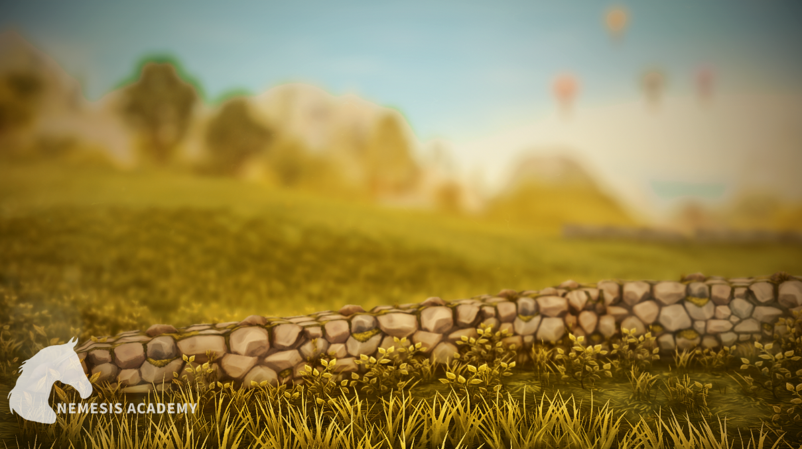
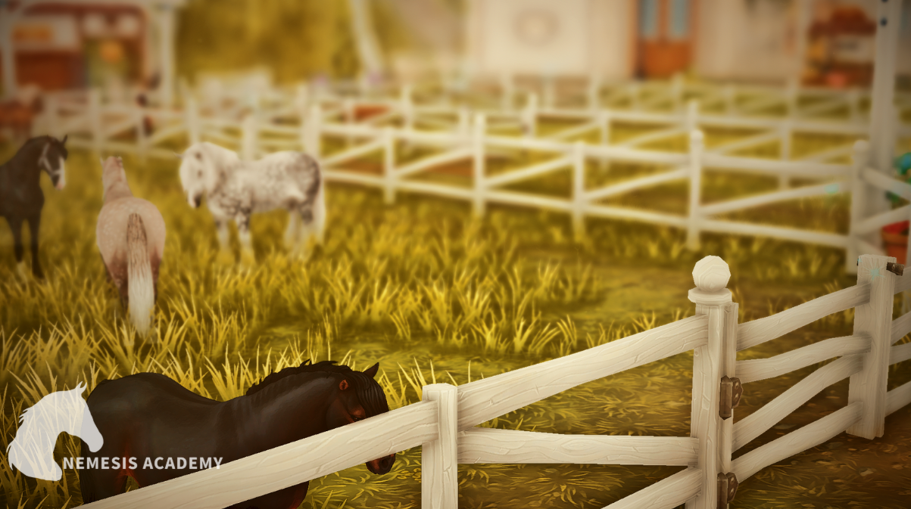
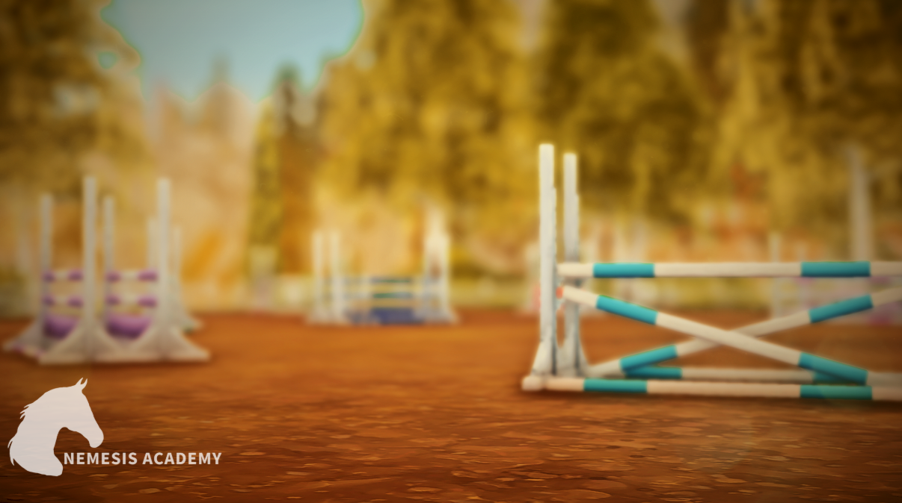
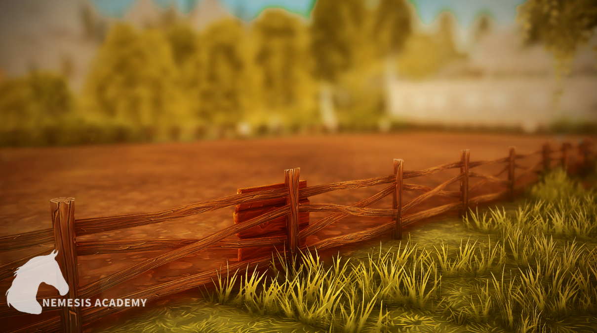
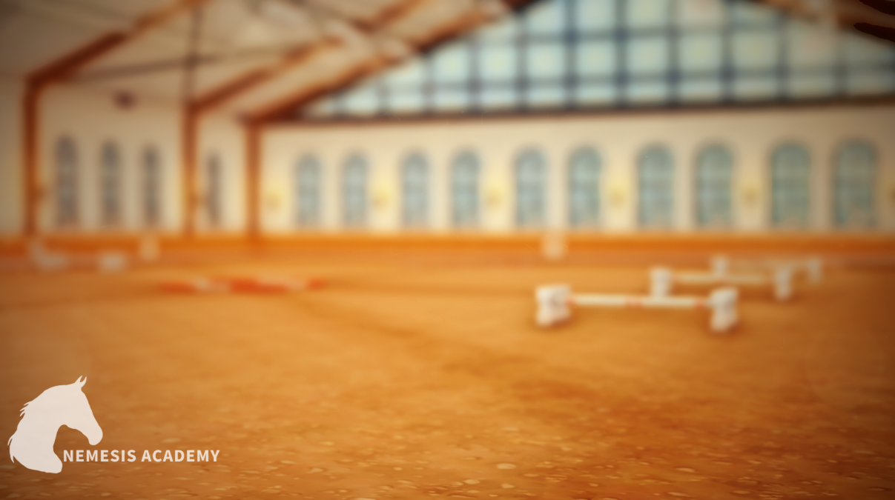
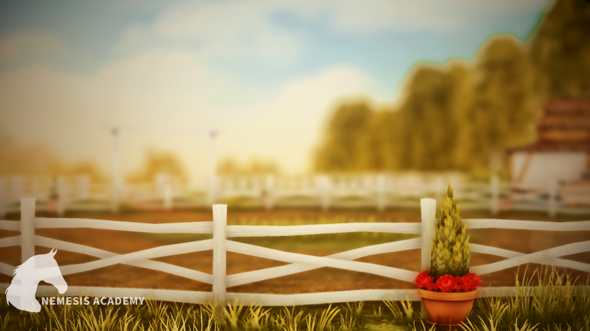
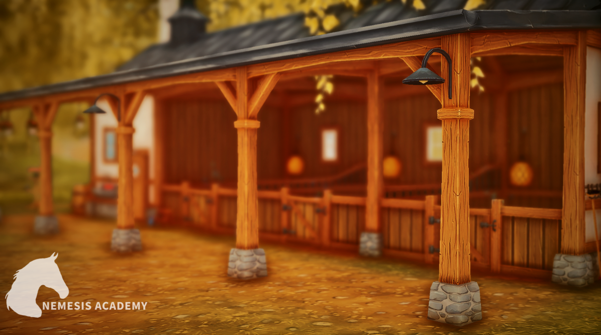
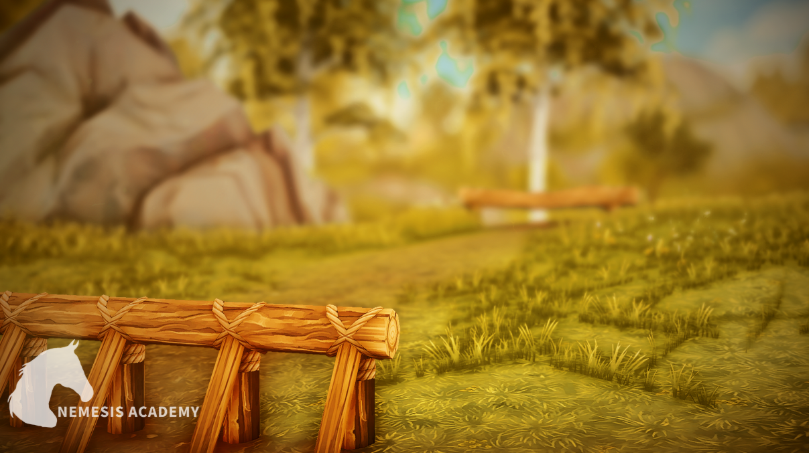
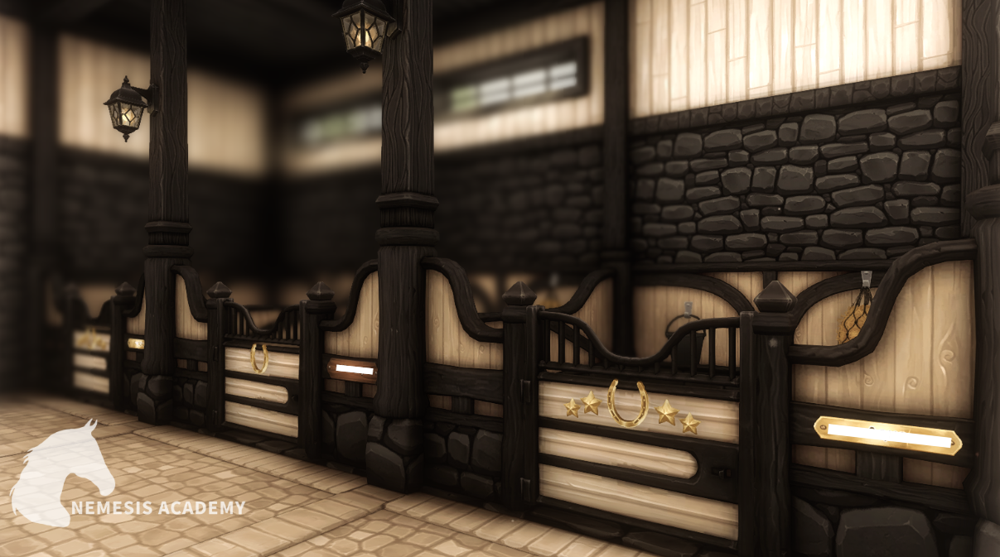

Obszerne, zielone pastwisko pokryte ziołami, idealne do wypasania koni

Duża ilość kwater, zapewniające profesjonalną opiekę,
nocleg na wolnym wybiegu i wyżywienie, pełen komfort dla twojego konia!

place skokowe z pochłaiaczem wody
oraz nawadnianiem podłoża, idealne
do treningów jeździeckich.

place ujeżdżeniowe z pochłaiaczem wody
oraz nawadnianiem podłoża,
idealne do treningów jeździeckich.

dwie ogromne hale do trenowania koni,
zakryte i zadaszone, zapewnia komfortowe warunki do jazdy konnej i
treningów niezależnie od pogody.

Ogrodzony lonżownik,
służący do pracy nad koniem z użyciem lonży,
idealny do treningu

Myjka zewnętrzna z ciepłą wodą,
miejsce gdzie po intensywnym treningu lub
spacerze w błocie, możesz zapewnić swojemu koniu
kojącą kąpiel w komfortowych warunkach

Stajnie Angielskie zapewniające koniom
stały dostęp do świeżego powietrza.

Tor Crossowy, trasa w naturalnym terenie z
przeszkodami, piękne plenery oraz adrenalina i wyzwania

Stajnia wewnętrzna w stylu Gotyckim